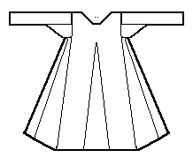

According to the typology given in Nockert, Type 4 Tunics are typified as
"Garments consisting of two straight-cut (?) main pieces -- front and back -- joined together with a shoulder seam. Side gores inserted between the main pieces -- narrow at the top, flaring heavily from the waist downwards -- and forming sleeve openings together with the main pieces. Gores inserted to the same height in the main piece, in the middle of the front and back. Neck slits and pokcet slits occur. Straight sleeve openings. Sleeves long, tapering downwards and straight at the end. Gores under the sleeves."
This is an outer garment, possibly a sleeved surcote, although pocket slits are only found in one of the examples. Norlund's typology identifies them as identical to the cote-hardie. The women's version of the garment was full length, while the men's seem to have reached mid-calf. There are three examples of this type of tunic; Herjolfsnes no.38, Herjolfsnes no.39, Herjolfsnes no.41.
Go to Tunic Page or Proceed
Some Clothing of the Middle Ages, by I. Marc Carlson, Copyright 1996, 1997. This code is given for the free exchange of information, provided the Author's Name is included in all future revisions, and no money change hands-